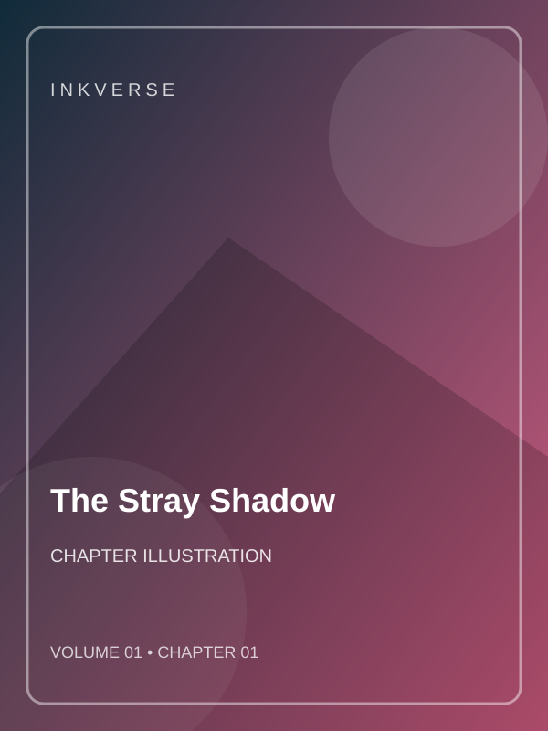

A teen who understands animals befriends a mysterious black cat. An eerie shadow tests their unusual bond. This was the beginning of a journey no one in the town would forget.
The evening sky had turned the color of ink when the first unusual sign appeared. Most people hurried home, hoping the strange sounds would fade before morning. The main character stayed—not because fear was absent, but because someone needed to find out what was happening.
At the edge of the street, a small light pulsed like a distant heartbeat. Each time it brightened, a new clue appeared: a mark on the wall, a footprint in the dust, and a note with only three words written on it: “Look closer.”
A new companion arrived with a different idea. Instead of rushing toward danger, they studied the clues and compared what each had noticed. Their strengths were not the same, but that made their plan stronger.
When the hidden threat finally revealed itself, the pair stood their ground. The challenge was bigger than either expected, and the first attempt failed. Still, they learned from the mistake, protected the people nearby, and found a safer way forward.
By sunrise, the immediate danger had passed. The mystery was not completely solved, but the hero had discovered something more important than an easy victory: courage could mean asking for help, and a true beginning was made one thoughtful choice at a time.
— END OF CHAPTER 1 —